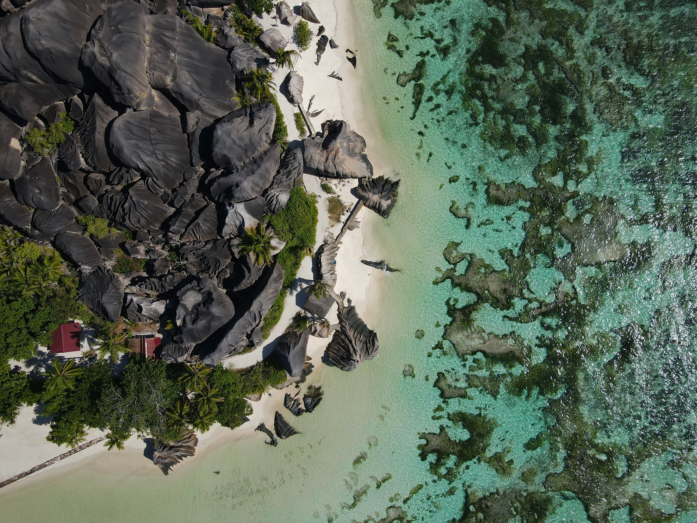

Estate 2026: l'Italia regina d'Europa, 36 milioni di italiani in partenza tra mete low cost e viaggi con l'AI
L'Italia guida la classifica europea del turismo con il 51,2% di saturazione delle strutture, superando Spagna e Francia. Sono 36 milioni gli italiani pronti a partire, ma la guerra in Iran e il caro-prezzi ridisegnano le rotte: crescono Albania e Montenegro, esplode il turismo di montagna trainato dalle Olimpiadi di Milano-Cortina 2026, mentre l'intelligenza artificiale conquista il 56% dei viaggiatori USA nella pianificazione delle vacanze.

Italia al vertice: 51,2% di saturazione, superata la Spagna
L'estate 2026 si annuncia come un'annata storica per il turismo italiano. Secondo i dati diffusi dal Ministero del Turismo il 7 luglio 2026, l'Italia registra il 51,2% di saturazione delle strutture ricettive, il dato più alto d'Europa. La Spagna si ferma al 42,8%, la Francia al 32,9% (fonte: ANSA, Sky TG24). Un primato che conferma il Belpaese come meta prediletta dai viaggiatori internazionali.
Le proiezioni ENIT per il 2026 parlano di oltre 480 milioni di presenze totali, un traguardo che consolida il contributo del turismo all'economia nazionale. Il settore ha già generato un PIL di 237,4 miliardi di euro nel 2025, con stime che prevedono una crescita fino a 282,6 miliardi entro il 2035 (fonte: ENIT — BIT 2026). L'occupazione turistica rappresenta oggi il 13,2% del totale nazionale.
A guidare la spesa dei turisti stranieri sono i tedeschi (7,5 miliardi di euro nei primi 9 mesi 2025), seguiti dagli americani (5,3 miliardi). Il Regno Unito registra un +18,5% rispetto all'anno precedente (fonte: Banca d'Italia — Indagine turismo internazionale 2025). Le principali motivazioni di viaggio restano la cultura, l'enogastronomia e l'outdoor e la natura.
36 milioni di italiani in viaggio: crescono le mete low cost
Secondo il rapporto Coldiretti/Ixè diffuso a giugno 2026, 36 milioni di italiani si apprestano a partire per le vacanze estive. La durata media del viaggio è di 10 giorni: il 28% opta per 4-7 giorni, il 25% per 1-2 settimane, il 15% per un massimo di 3 giorni. Ben il 74% sceglie una meta europea a breve raggio (fonte: Coldiretti, ANSA).
I dati di eDreams disegnano la classifica delle destinazioni preferite: Spagna (23%), Italia (19%) e Grecia (16%) dominano la graduatoria. La top 10 delle città più gettonate vede Barcellona, Ibiza, Olbia, Catania, Tirana, Parigi, Mykonos, Zante, Palma di Maiorca e Valencia.
Particolarmente significativa è la crescita delle mete emergenti: Torino segna un +167%, Alicante +88%, Siviglia +62%, Cagliari +56% (fonte: eDreams, Il Sole 24 Ore). L'Albania, con la sua riviera e la capitale Tirana, si conferma una delle destinazioni low cost più ambite del Mediterraneo, insieme a Montenegro e Croazia.
Sono infatti 7 milioni gli italiani che hanno rinunciato a una meta estera, di cui il 77% per i costi proibitivi e il 18% per il timore legato ai conflitti internazionali (fonte: Coldiretti/Ixè, QuiFinanza).
Caro-voli e guerra in Iran: il turismo si fa di prossimità
Il costo dei voli aerei ha registrato un incremento significativo. Secondo AFAR e AAA, le tariffe aeree domestiche USA sono aumentate del +25% dall'inizio 2026, mentre in Italia i rincari sulle rotte europee hanno raggiunto in media il +21%, con punte del +74% sulle destinazioni mediterranee ad agosto. Una conseguenza diretta dell'instabilità dei prezzi del carburante legata alla guerra in Iran (in corso da febbraio 2026, fonte: Sky TG24, eTurboNews).
Il conflitto sta ridefinendo gli equilibri del settore: secondo Expedia Group, le conversazioni relative al turismo domestico sono aumentate del 77% a livello globale (fonte: Expedia Group comunicato 21 maggio 2026). Secondo Barclays, circa un quinto dei britannici preferisce vacanze domestiche per ragioni economiche.
Il fenomeno del turismo di prossimità sta ridisegnando le scelte dei viaggiatori europei, che privilegiano mete raggiungibili con voli brevi o con l'auto. In questo contesto, le località italiane — dalla Sardegna alla Sicilia, dalla Puglia alle Cinque Terre — beneficiano di un flusso crescente di turisti.
Montagna in festa: l'effetto Olimpiadi di Milano-Cortina
Un capitolo a parte merita il turismo montano, in forte crescita grazie all'effetto trainante delle Olimpiadi Invernali di Milano-Cortina 2026. Le località delle Dolomiti, del Trentino e della Valle d'Aosta registrano un aumento delle prenotazioni ben oltre la stagione invernale, con villeggiature estive all'insegna del fresco e dell'outdoor (fonte: VRetreats/Alpitour, Isnart/Unioncamere).
Località come Pila, Champoluc e le valli dolomitiche si candidano a diventare mete per tutto l'anno, attirando un turismo sportivo e naturalistico in forte espansione. Lonely Planet inserisce la Sardegna tra le mete imperdibili del 2026, accanto a destinazioni esotiche come il Tagikistan, la Tunisia e le Azzorre (fonte: Lonely Planet Best in Travel 2026, CNN).

AI e nuovi trend: la rivoluzione della pianificazione
L'estate 2026 segna anche una svolta tecnologica. Secondo il rapporto Phocuswright (The AI Surge, marzo 2026) e le previsioni Booking.com Travel Predictions 2026, il 56% dei viaggiatori statunitensi utilizza già strumenti di intelligenza artificiale per organizzare le proprie vacanze. L'indagine di Booking.com (su oltre 29.000 viaggiatori in 33 Paesi) conferma che l'AI sta diventando un alleato sempre più presente nella pianificazione.
Ma non è solo tecnologia. L'indagine mette in luce trend sociali di grande interesse:
- Glowcation: l'80% dei viaggiatori si dichiara interessato a vacanze dedicate al benessere e alla cura di sé (fonte: Booking.com Travel Predictions 2026)
- Gig tripping: viaggi organizzati attorno a concerti e grandi eventi musicali
- Slow travel: in crescita la preferenza per esperienze lente, immersive e sostenibili
- Hotel hopping: il 54% dei viaggiatori cambia più strutture nello stesso viaggio per vivere esperienze diverse (fonte: Expedia Group Unpack '26)
I Mondiali di Calcio 2026, che si terranno tra Stati Uniti, Canada e Messico, stanno già ridisegnando i flussi turistici: Booking.com registra un +289% di ricerche dall'Europa per Kansas City, mentre Airbnb segnala un +319% di prenotazioni anno su anno (fonte: Booking.com, Airbnb). Segnale che i grandi eventi sportivi continuano a essere un potentissimo motore turistico.
Prospettive: un'estate di conferme e trasformazioni
L'estate 2026 si presenta come un crocevia per il turismo italiano ed europeo. Da un lato, i numeri da record confermano la forza del settore; dall'altro, le tensioni geopolitiche e l'inflazione spingono verso modelli di viaggio più flessibili, tecnologici e responsabili.
L'Italia, con il suo primato europeo di saturazione, si trova nella posizione ideale per capitalizzare questi cambiamenti. La sfida sarà gestire i flussi in modo sostenibile — evitando l'overtourism nelle mete più gettonate — e continuare a innovare, abbracciando le nuove tecnologie senza perdere il calore umano che da sempre contraddistingue l'accoglienza italiana.
Fonti
Ministero del Turismo ENIT Coldiretti/Ixè eDreams AFAR/AAA Expedia Group Phocuswright Booking.com Lonely Planet Barclays Banca d'Italia VRetreats/Alpitour Airbnb- images/spiaggia-italiana.jpg — Photo by Camille Minouflet on Unsplash (Unsplash License)
- images/spiaggia-tropicale.jpg — Photo by Michaela Římáková on Unsplash (Unsplash License)